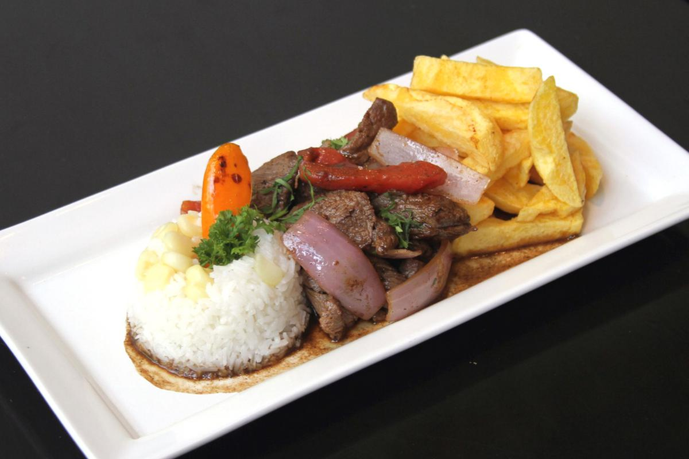

Go back to look at other recipes

Lomo saltado is a popular traditional Peruvian dish, a stir fry that typically combines marinated strips of sirloin (or other beef steak) with onions, tomatoes, french fries, and other ingredients: typically served with rice on the side. The dish originated as part of the chifa tradition, the Chinese cuisine of Peru, though its popularity has made it part of the mainstream culture.
The use of both and potatoes (which originated in Peru) and rice (which originated in Asia) as starches are typical of the cultural blending that the dish represents. It is considered one of the most loved dishes that shows the rich fusion of not only two cultures, but the old and the new.
Go back to look at other recipes